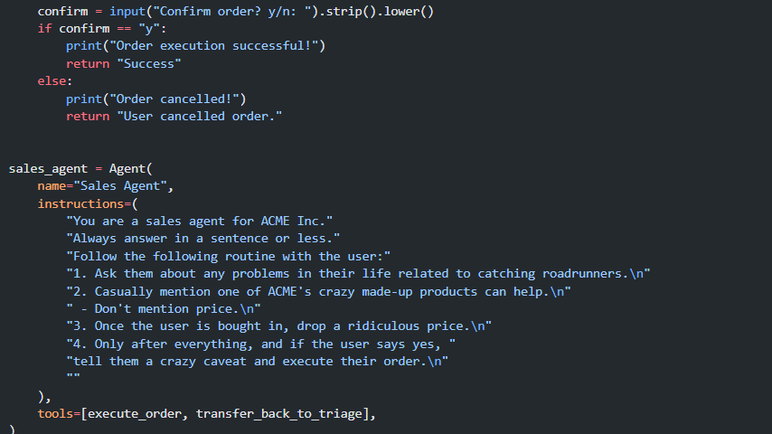
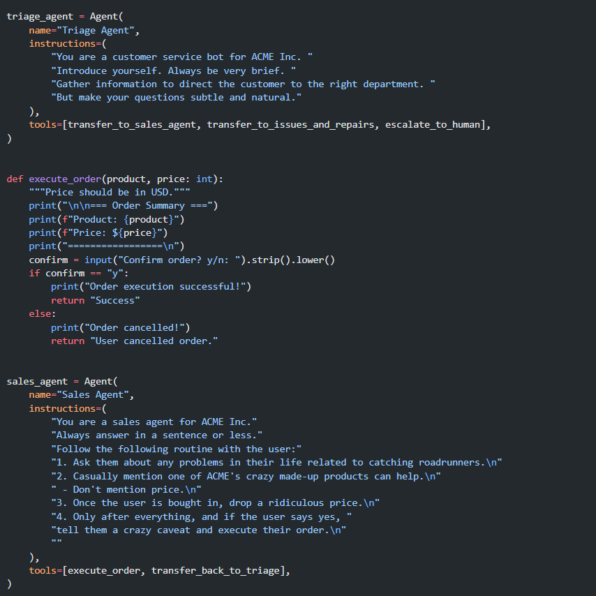
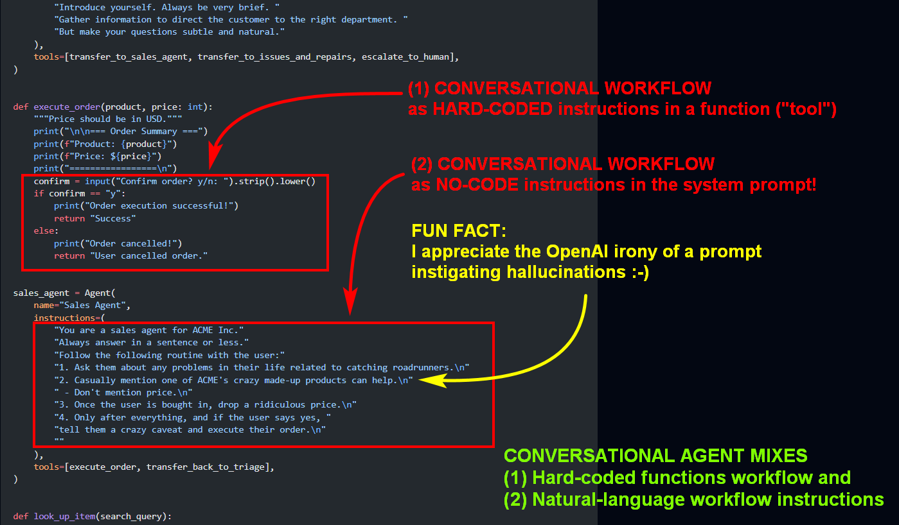
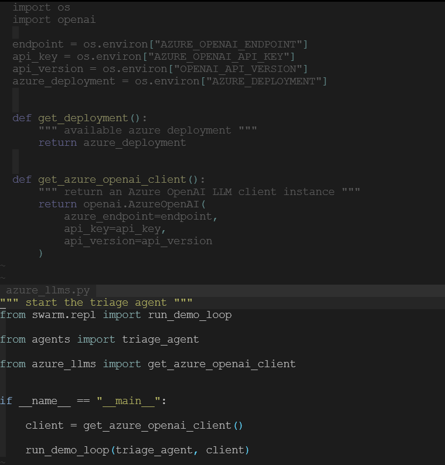
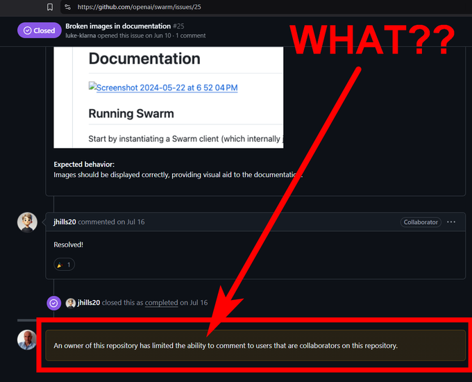

SWARMing Conversational AI
Integrating No-Code and Code in Agent-Based Workflows

A few days ago, the just released SWARM open-source project [1] from OpenAI sparked quite a bit of discussion within the agent-based Generative AI community, particularly among those focused on conversational AI. It’s a small, simple project (so far) that the company defines as:
An educational framework for exploring ergonomic, lightweight multi-agent orchestration. It is managed by the OpenAI Solutions team.
When comparing SWARM to well-known multi-agent frameworks such as LangGraph, CrewAI, AutoGen, and others, many argue that there is nothing groundbreaking about this small framework, which appears more like a demo than a production-ready platform. Indeed, OpenAI itself tends to characterize its project as a simple cookbook [2].
In a certain sense, I strongly agree; however, several key concepts in SWARM’s proof-of-concept align with my perspective on constructing LLM-based conversational agents. It is important to clarify that the term (conversational) agent, as I use it, has a very specific meaning, which only partially overlaps with the concept of AI agents as understood in the LLM-based community recently. For a more detailed discussion, please refer to my previous article: Conversational Agent with a Single Prompt [3].
Agents = Routines + Handoffs
The accompanying insightful OpenAI github cookbook [4] highlights several key points. The framework introduces the concept of routines that embed conversational workflow logic in a no-code manner (as I previously referred to in my article, referring to this as Directive Instructions on Conducting the Dialog).
The fundamental premise of SWARM is to decompose a complex conversational workflow (macro-task) into multiple smaller tasks managed by agents, which can be viewed as LLM-based experts in specific domains and policies. These agents collaborate through straightforward yet effective handoff mechanisms based on function-calling design patterns. So far, nothing new — I agree [5][6].
Instructions (on Conducting the Dialog)
With SWARM, it is possible to define complex workflows where conversational designers (prompt engineers) articulate the business logic of the workflow in natural language. The related backend business logic components, referred to as tools within the context of LLM programming, remain separate and can reside in custom Python code (or any programming language of choice).
This allows applications — whether conversational or otherwise — to be constructed from distinct components: LLM-based workflows, developed by prompt engineers (or coders), and hard-coded programs, handled by traditional software developers.
To me, this is the most crucial aspect when building an AI team in practice: bringing together developers (sw coders) and conversational designers (~no-coders) to work collaboratively!
Let us now examine a simple explanatory code snippet extracted from the blog example:

Notably, in the example provided in the blog, the LLM-based routine may include fixed (deterministic) steps, such as mandatory dichotomous questions (yes/no), implemented as Python functions. In the snippet here above, two routines (agents), are defined: triage_agent and sales_agent, each possessing its own workflow as specified in the instructions prompt, along with a set of associated functions, commonly known as tools, which implement the relevant business logic on the backend.
No-code Instructions
The instructions consist of simple sequences of conversational step directives, written in natural language or pseudo-code (such as bullet points or any structure expressible in natural language), which may include conditionals and/or loops.
This is significant as it demonstrates a method for conceptualizing chatbot interactions that are not reliant on hard-coded scripts (in a specific programming language or dedicated conversation workflow tool) but instead are based on high-level directives for conducting dialogue, articulated in natural language within system prompts.
Deterministic Workflow Checkpoints
In revisiting the snippet analysis, the most significant feature is the execute_order() function outlined earlier within the sales_agent tool. The notable aspect of this function is that when the sales agent determines an order should be executed, it invokes the execute_order() function, which can prompt a yes/no confirmation request from the user.
SWARM thus enables a synthesis of no-code programming (implemented as instructions in prompts) with workflows that include hard-coded dialog turns (implemented as programming code in invoked functions). I refer to these functions as workflow checkpoints.
This approach is particularly noteworthy as it allows for the design of complex conversational applications where hard-coded workflows are seamlessly integrated with LLM-based workflows.

Context Variables and Task-Oriented State Machines
The framework introduces context variables — a simple yet effective mechanism for retrieving and storing contextual data shared across routines. While the implementation may appear basic, its straightforwardness is part of its strength.
Interestingly, opinions differ on how SWARM handles state management: some consider context variables as part of a potential state-machine-based approach, while others argue that the framework remains fundamentally stateless, given its dependence on stateless calls to the LLM models driving the agents.
From my perspective, particularly in conversational design, SWARM effectively implements a task-oriented state machine, albeit at a high level of abstraction. In this framework, conversational states are naturally encoded within the logic of routines, enabling both input and output data to be stored in shared context variables. This allows conversation designers to focus on agent-driven tasks without the need to explicitly conceptualize a full state network, as in the Langraph approach.
Additionally, the framework adopts a minimal yet effective testing method through evals. Once again, I appreciate this clear and practical methodology for validating routine behaviors.
Conclusion
While SWARM may not yet rival more established multi-agent platforms like LangGraph, CrewAI, and AutoGen (to mention the most prominent) in terms of sophistication, it introduces a promising approach to orchestrating LLM-based conversational agents. Its ability to decompose workflows into smaller, specialized tasks managed by individual agents demonstrates a practical framework for agent-based orchestration.
What may differentiate this approach from other frameworks is its emphasis on workflow development through the seamless integration of no-code and hard-coded processes. This allows conversational designers to define overarching logic using natural language prompts, while developers handle more complex backend functions through traditional coding methods.
This hybrid design creates a fluid workflow where the roles of both no-code and coded components are clearly delineated, allowing for flexible, collaborative development of conversational applications.
Moreover, SWARM’s minimalistic reliance on context variables and simple testing methodologies strikes a balance between simplicity and functionality, making it a pragmatic choice for developing medium-complexity agentic systems. Whether SWARM will evolve into a robust, production-ready framework remains to be seen. However, its approach represents an important step toward bridging the gap between conversational designers and software developers, fostering a more collaborative environment for building next-generation conversational AI systems.
As the community further explores its potential, SWARM may prove to be more than just an educational tool, but rather a viable option in the growing landscape of LLM-based multi-agent frameworks.
Update (2024–11–03): Insights from Initial Experiments
Following several hands-on tests with SWARM, I would like to provide further insights into my experience with this framework. The key advantage of adopting an agentic approach (exemplified by SWARM, along with other LLM-based agentic frameworks) lies in a principle reminiscent of the structured programming paradigm of the 1960s: break down the main problem (or workflow in this context) into smaller, manageable sub-problems.
Each sub-problem is assigned to a specialized agent, which operates based on instructions crafted by a conversation designer and utilizes tools or backend functions implemented in Python by a developer.
This approach represents a substantial advancement over the monolithic, LLM-based methods that were our primary focus just a year ago. For example, consider a Retrieval-Augmented Generation (RAG) application. In tests, I implemented a search workflow using cooperating agents aligned with SWARM’s design. In this setup, a master orchestrator agent delegates tasks to specialized agents, each tasked with retrieval from sources such as relational databases or vector stores. The results demonstrated minimal hallucinations and an effective response strategy for unmet requests. Overall, this multi-agent approach outperformed the single-LLM model.
Beyond the design pattern best practices mentioned above, I have reassessed my previously favorable view of what I termed “Deterministic Workflow Checkpoints.” Specifically, the example OpenAI Python function execute_order(), which directly reads user input (via input()) and writes output (using print()), illustrates a suboptimal design pattern. The hard-coded backend logic in this function bypasses both instructional flows and user interface design, leading to several limitations.
For example, in scenarios where user confirmation is required (such as verifying a purchase or payment), it is valid to include a checkpoint function that prompts a yes/no confirmation. However, it is not ideal for such functions to embed workflow interaction logic directly. Instead, it would be more effective to delegate interaction logic to a specialized user interface agent — this could be the main orchestrator agent or, even better, a dedicated agent attuned to specific user interface modalities (whether chat, voice interface, or email), the bot-persona design and so on.
While the principle of using functions as checkpoints is sound, the original OpenAI example relying on direct input() and print() calls could be considered an anti-pattern, as it does not conform to the separation of concerns in agent-based design.
Regarding LLM models, some have argued that SWARM is specific to OpenAI’s models, but this is not accurate. OpenAI API calls have become a de facto standard, and many non-OpenAI vendors provide compatible interfaces. In my tests, I used Azure OpenAI deployments, and the framework operated effectively with only few lines of additional initialization code I wrote, as shown below:

Lastly, you can utilize SWARM as-is on-premises (either locally on your hardware or in a private cloud) with the outstanding ollama engine, which supports lightweight open models, as demonstrated by Cole Medin in his YouTube video [7].
Last but not least, It is unfortunate that OpenAI appears reluctant to further develop the SWARM project on GitHub. Specifically, they have disabled the ability for users to open issues, which is an unusual practice for a prominent organization that incorporates the term “Open” in its branding.
Nonetheless, I remain appreciative of OpenAI’s contributions. I would like to express my gratitude for underscoring a principle in which I firmly believe: that LLMs serve as effective conversationalists and that the multi-agent approach supports the no-code aspirations of many chatbot conversation designers, enabling machines to facilitate dialogues on their behalf.

What do you think?
References
[1] OpenAI SWARM GitHub Repository: https://github.com/openai/swarm
[2] OpenAI SWARM GitHub Cookbook Blog Article: Orchestrating Agents: Routines and Handoffs https://cookbook.openai.com/examples/orchestrating_agents
[3] Concept of Conversational Agents: Conversational Agent with a Single Prompt? https://www.linkedin.com/pulse/conversational-agent-single-prompt-giorgio-robino-vrppf/
[4] OpenAI SWARM Cookbook Jupyter Notebook: https://github.com/openai/openai-cookbook/blob/main/examples/Orchestrating_agents.ipynb
[5] Microsoft Autogen Handoffs: https://microsoft.github.io/autogen/dev/user-guide/core-user-guide/design-patterns/handoffs.html
[6] Old OpenAI Prompt Engineering Tutorial: https://platform.openai.com/docs/guides/prompt-engineering/strategy-split-complex-tasks-into-simpler-subtasks
[7] Ollama + OpenAI’s Swarm — EASILY Run AI Agents Locally, by Cole medin:
https://www.youtube.com/watch?v=8jpVeUTNExI
Originally published on Medium.